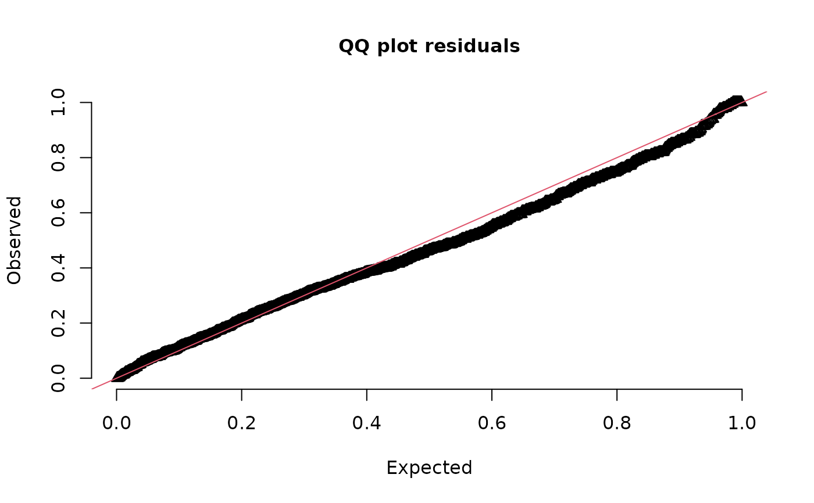
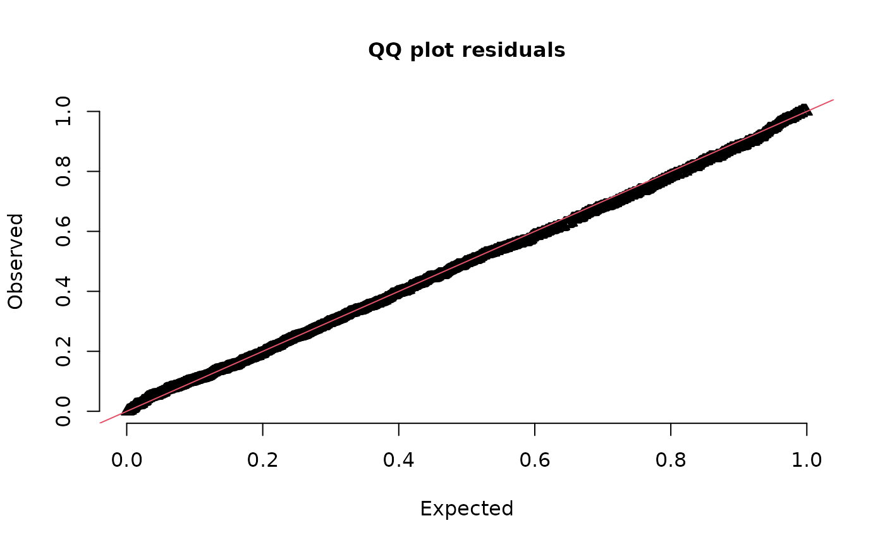
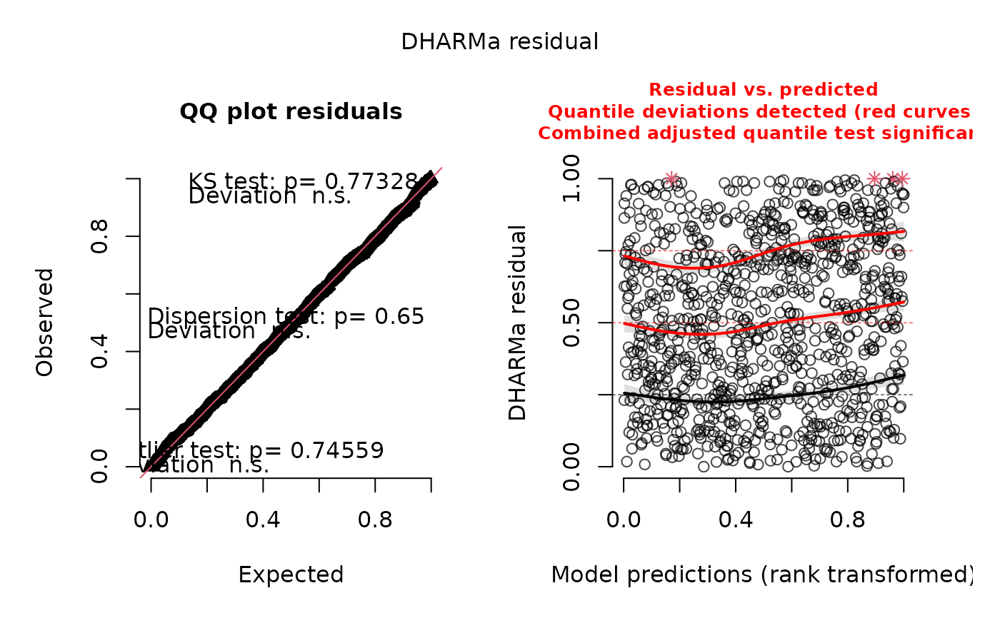

Plot (and possibly return) DHARMa residuals. This is a wrapper function
around DHARMa::createDHARMa() to facilitate its use with sdmTMB() models.
Arguments
- simulated_response
Output from
simulate.sdmTMB().- object
Output from
sdmTMB().- plot
Logical.
- return_DHARMa
Logical.
- ...
Other arguments to pass to
DHARMa::createDHARMa().
Value
A data frame of observed and expected values is invisibly returned,
so you can set plot = FALSE and assign the output to an object if you wish
to plot the residuals yourself. See the examples.
If return_DHARMa = TRUE, the object from DHARMa::createDHARMa()
is returned and any subsequent DHARMa functions can be applied.
Details
Note: It is recommended to set type = "mle-mvn" in
residuals.sdmTMB() for the resulting residuals to have the
expected distribution. This is not the default.
Examples
# Try Tweedie family:
fit <- sdmTMB(density ~ as.factor(year) + s(depth, k = 3),
data = pcod_2011, mesh = pcod_mesh_2011,
family = tweedie(link = "log"), spatial = "on")
# The `simulated_response` argument is first so the output from
# simulate() can be piped to dharma_residuals():
# not great:
simulate(fit, nsim = 200, type = "mle-mvn") |>
dharma_residuals(fit)

# delta-lognormal looks better:
fit_dl <- update(fit, family = delta_lognormal())
simulate(fit_dl, nsim = 200, type = "mle-mvn") |>
dharma_residuals(fit)

# or skip the pipe:
s <- simulate(fit_dl, nsim = 200, type = "mle-mvn")
# and manually plot it:
r <- dharma_residuals(s, fit_dl, plot = FALSE)
head(r)
#> observed expected
#> 1 0.0001675257 0.001030928
#> 2 0.0004061027 0.002061856
#> 3 0.0011315886 0.003092784
#> 4 0.0035284390 0.004123711
#> 5 0.0072835200 0.005154639
#> 6 0.0081120117 0.006185567
plot(r$expected, r$observed)
abline(0, 1)
# return the DHARMa object and work with the DHARMa methods
ret <- simulate(fit_dl, nsim = 200, type = "mle-mvn") |>
dharma_residuals(fit, return_DHARMa = TRUE)
plot(ret)
